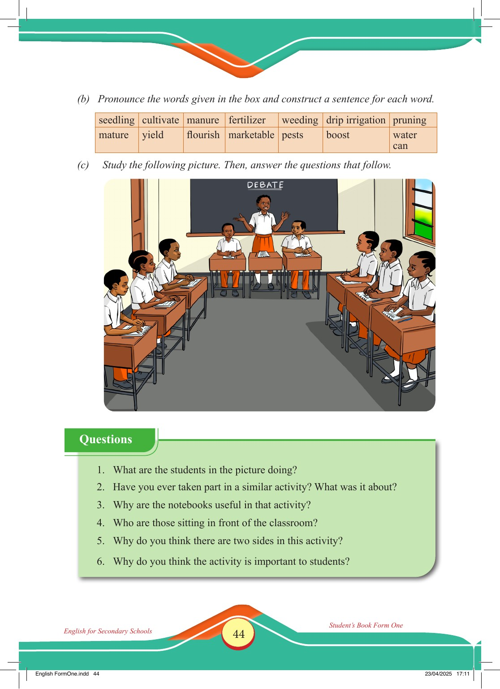

Accessible text transcript - page 44
Use the reader's read-aloud controls or select an individual segment below.
Printed book page 44. (b) Pronounce the words given in the box and construct a sentence for each word. seedling cultivate manure fertilizer weeding drip irrigation pruning mature yield flourish marketable pests boost water can (c) Study the following picture. Then, answer the questions that follow. Students in a classroom taking part in a debate, with one girl speaking at the front while two teams sit on opposite sides and write notes. DEBATE Questions Questions 1. What are the students in the picture doing? 2. Have you ever taken part in a similar activity? What was it about? 3. Why are the notebooks useful in that activity? 4. Who are those sitting in front of the classroom? 5. Why do you think there are two sides in this activity? 6. Why do you think the activity is important to students? Return to the page image